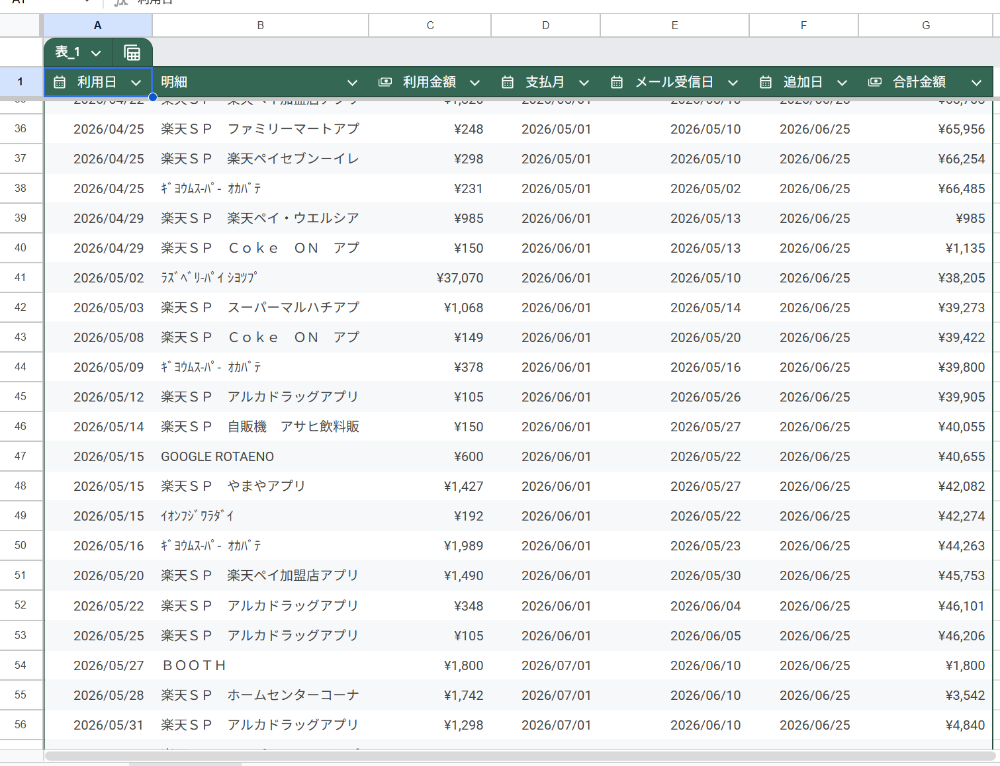
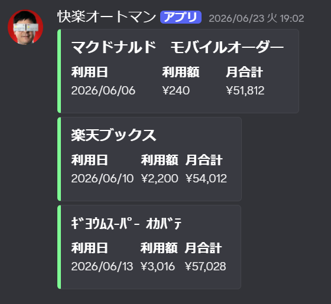

快楽オートマンって？
このシステムは、クレジットカードをついつい使いすぎてしまうのを防ぐために、利用状況を分析するためのスプレッドシートに利用履歴を自動で保存してくれるシステムです。
表計算ソフトならグラフとか作れて分析しやすいなと思って。
前にExcelに毎回手入力してたんですけどめんどくさくなっちゃって。結局やらなくなっちゃったんですよね。

じゃあそのめんどくさい処理は自動でやらせてしまおうという魂胆です！
概要
technics
| 環境 | 言語 | 出力 |
|---|---|---|
| Google Apps Script | JavaScript | Googleスプレッドシート |
システム自体はGASで1日1回自動で実行され、出力結果は私個人のスプレッドシートに出るので、UIとかはないです。
ちなみにターゲットは「私」です。
algorithm
毎日19:00に自動実行
👇️
Gmailにある「カード利用のお知らせ」のメール2件分を取得
👇️
メール本文にある、利用日・利用先・利用金額を取得
👇️
データを整えてスプレッドシートに保存
工夫したこととして、記録の抜けや重複がないように、メールは複数件取得し、スプレッドシートを探索しています。スプレッドシートへの読み込みや書き込みは重い処理なので、探索の際には一気にすべて読み込み、書き込みの際にもまとめて書き込むようにしました。
またスプレッドシートには、月ごとの利用合計を求める関数も記録しているので、これで来月末にいくら引き落とされるのかがわかるようになっています。


出力結果はこんな感じです。新しい利用があるたびに増えていきます。お金をください。
今後

新しい利用があったときに、普段からよく使っている、Discordに通知するようにできたら便利だなと思いました。
しかし、Webhookがどういうわけかうまく動かなかったため、Discordのボットを自作して通知してみたいなと思いました。
Discordボットは作ったことがないので、これを機会に学んでみたいです。
最後に
GASについては初めて触りましたが、Gmailの取得やスプレッドシートの操作など、アカウントに関することが様々にできて面白かったです。
身近な困りごとをシステムで解決するのが私の趣味のひとつであるので、GASはそれを実現しやすい環境だなと思いました。
またなにか面白いアイデアが浮かんだらやってみようと思います。